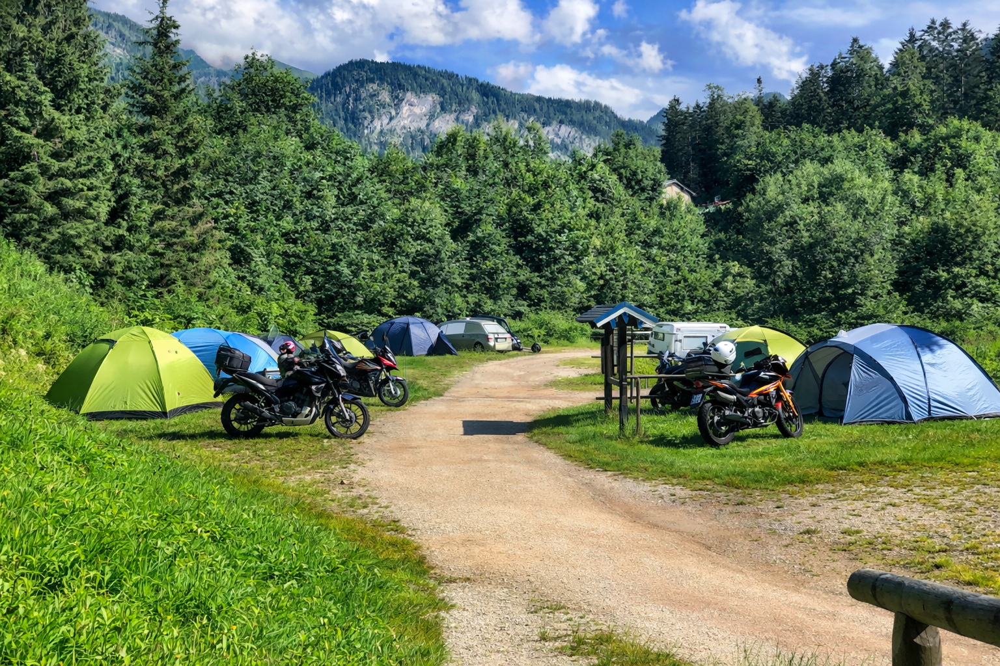

11. Camping Grafenlehen (Königssee)
47.59485, 12.986016

Elhelyezkedés
Königsseer Fußweg 71, 83471 Berchtesgaden, Németország.
Erdős, folyóparti területen van, kb. 5 perc sétára a Königssee-től. A környező hegyek (Watzmann, Grünstein, Jenner) látványa adja a táj hangulatát.
Felszereltség és szolgáltatások
Modern, 2020-ban felújított vizesblokkok.
Komfort és standard parcellák.
Kisbolt friss pékáruval.
Játszótér, pingpongasztal.
Elektromos autó töltők: 6 db.
Téli kempingezés lehetősége.
Éttermek kb. 10 perc sétára.
Motorbarát, stabil talajjal és könnyű megközelítéssel.
Kapcsolat
E-mail: info@camping-grafenlehen.de
Telefon: +49 (0) 8652 4140
Web: camping-grafenlehen.de
Árlista (2026)
Előszezon / Utószezon (06.01–06.30 és 10.01–12.20)
Komfort parcella: 19 € / éj, Standard parcella: 15 € / éj, Sátor + autó: 14 € / éj.
Felnőtt: 12,5 € / éj, Gyerek (4–15 év): 9 € / éj, Kutya: 4 € / éj.
Főszezon (07.01–09.30 és 12.21–01.05)
Komfort parcella: 21 € / éj, Standard parcella: 16 € / éj, Sátor + autó: 15 € / éj.
Felnőtt: 13,5 € / éj, Gyerek (4–15 év): 10 € / éj, Kutya: 4 € / éj.
Egyéb
Áram: 1,30 € / kWh.
Idegenforgalmi adó: Felnőtt 3,10 € / nap, Gyerek (6–16 év) 1,55 € / nap.
Megközelítés motorral (Ausztria felől)
Ajánlott útvonal: Budapest → Győr → Bécs → Linz → Salzburg → Berchtesgaden.
Távolság kb. 550 km, utazási idő 5,5–6 óra.
Programlehetőségek a környéken
Königssee: csónaktúra St. Bartholomä kolostorhoz, parti séták, nyári fürdés.
Jennerbahn: felvonó és panorámaútvonalak.
Watzmann: haladó túrázóknak.
Berchtesgaden: sörfőzde, bajor éttermek, sóbánya.
Motoros utak: Rossfeld Panoramastraße, Kehlsteinhaus környéke, Ramsau bei Berchtesgaden.
Költségbecslés példa
2 fő + 1 sátor + 1 motor, 3 éjszaka, előszezon: kb. 145–150 € (áram opcionálisan).